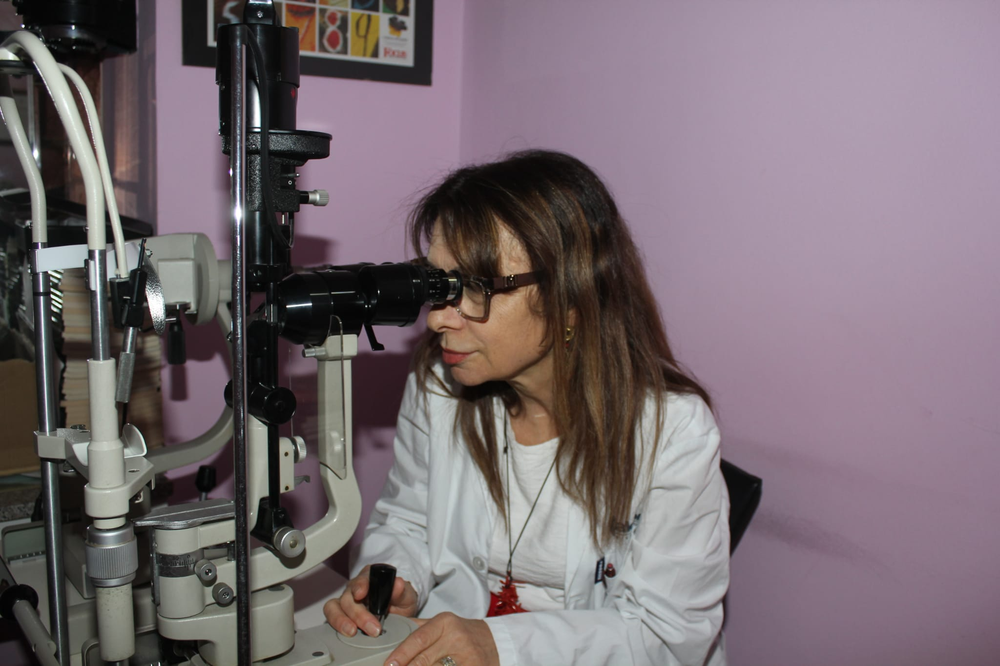
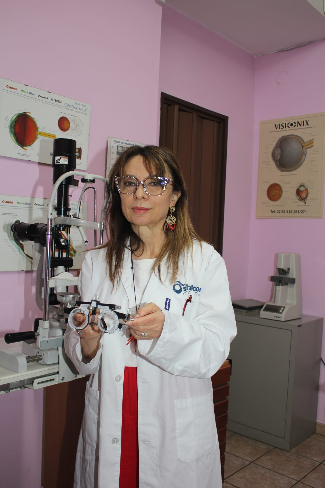

Prenditi Cura dei Tuoi Occhi
Consigli pratici e informazioni utili per prenderti cura della vista tua e della tua famiglia. Il team di EmiFotoOttica a Roma è a tua disposizione per una consulenza gratuita.
Molti difetti visivi si sviluppano gradualmente e passano inosservati per mesi o anni.

Un controllo periodico della vista permette di individuare per tempo difetti visivi come miopia, astigmatismo, ipermetropia e presbiopia, oltre a segnalare eventuali condizioni che richiedono l'attenzione di uno specialista oculista.
Molte persone si accorgono di un calo della vista solo quando il disturbo è già avanzato: mal di testa ricorrenti, affaticamento oculare, difficoltà a leggere da vicino o da lontano sono segnali da non sottovalutare.
In genere si consiglia un controllo ogni 1-2 anni per gli adulti in buona salute visiva, con cadenza annuale dopo i 40 anni, quando la presbiopia inizia a manifestarsi, e più frequentemente per chi porta già occhiali o lenti a contatto.
Piccole abitudini quotidiane che fanno la differenza per la salute dei tuoi occhi.
Chi lavora molte ore al computer o allo smartphone dovrebbe seguire la regola del 20-20-20: ogni 20 minuti, guardare per 20 secondi un punto a circa 6 metri di distanza. Lenti con filtro luce blu possono ridurre l'affaticamento visivo.
L'esposizione prolungata al sole senza protezione può danneggiare gli occhi nel tempo. Un occhiale da sole con lenti certificate e filtro UV adeguato è indispensabile in ogni stagione, non solo d'estate.
Una dieta ricca di vitamina A, omega-3 e antiossidanti favorisce la salute della retina. Anche una corretta idratazione aiuta a prevenire la secchezza oculare, sempre più diffusa con l'uso costante di schermi.

Famiglia
Nei bambini, i problemi visivi non diagnosticati possono influire sull'apprendimento scolastico e sullo sviluppo. È consigliabile un primo controllo entro i 3 anni e successivi controlli regolari durante il percorso scolastico, anche in assenza di sintomi evidenti.
Segnali a cui prestare attenzione: il bambino si avvicina molto ai libri o allo schermo, strizza spesso gli occhi, si lamenta di mal di testa o mostra difficoltà a seguire le lezioni alla lavagna. In questi casi è utile prenotare una visita di controllo.
In genere si consiglia un controllo della vista ogni 1-2 anni per gli adulti, ogni anno dopo i 40 anni, e con maggiore frequenza per chi porta occhiali da vista o lenti a contatto.
Gli occhiali vanno cambiati quando la gradazione non è più adeguata, in caso di mal di testa frequenti, visione sfocata o quando la montatura è danneggiata o non più comoda.
Applica la regola del 20-20-20 (ogni 20 minuti, 20 secondi di pausa guardando a 20 piedi di distanza) e valuta, con il nostro team, lenti con filtro luce blu se lavori molte ore al computer.
Vieni in negozio da EmiFotoOttica per una consulenza gratuita: ti aiutiamo a capire di cosa hai bisogno e a scegliere gli occhiali più adatti a te.